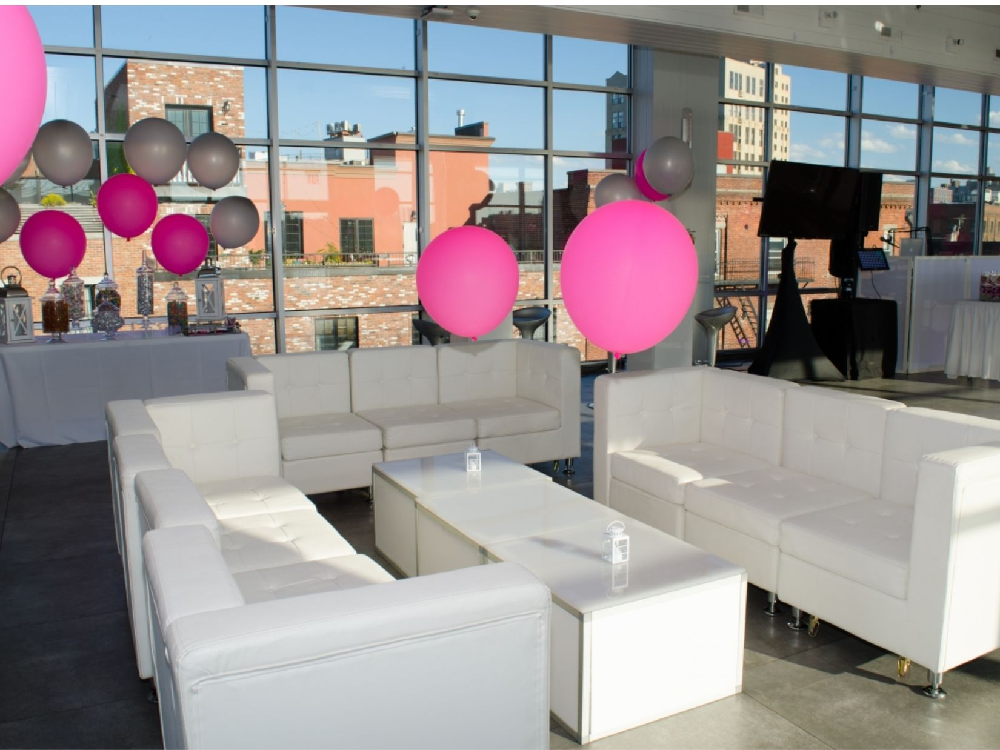
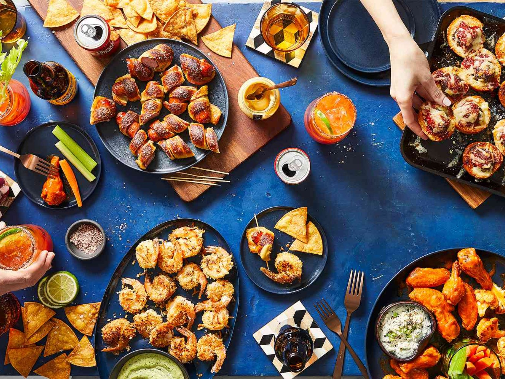

The Art of the Perfect Party
Throwing a killer party is like directing a tiny civilization for one night—except everyone's overdressed and nobody's building infrastructure. The perfect bash blends calculated effort with "happy accidents" (that you secretly planned). While your guests think they've stumbled into spontaneous magic, you're behind the scenes pulling strings like a party puppeteer. Your reward? That magical moment when your uptight coworker Dave finally loosens his tie and your college friend who "doesn't dance" suddenly knows every move to the Macarena. Success isn't measured in empty bottles, but in how many people exchange numbers or wake up wondering why their face hurts from smiling.
Your party space is basically a dating app for friendship—it either helps people connect or leaves them awkwardly clutching their drink while staring at their phone. Arrange furniture like you're setting traps for conversation—strategic bottlenecks where guests must either chat or perform increasingly uncomfortable sidesteps past each other. Lighting should flatter everyone just enough that they look 20% better than usual but not so dark that your living room gets mistaken for a speakeasy. Music volume follows one rule: if people are shouting "WHAT?" while their faces are three inches apart, it's too loud. If someone starts using their phone flashlight to find their drink, it's too dim. The sweet spot is where everyone feels just attractive enough to introduce themselves to strangers but not so confident they start impromptu karaoke.
Food at parties works on a simple principle: the fancier it looks, the faster it disappears, regardless of taste. That elaborate cheese board you spent an hour arranging? Gone in seven minutes flat. The last-minute microwaved frozen meatballs? Untouched for hours until the late-night hunger kicks in. Signature cocktails aren't just drinks—they're liquid conversation starters and convenient scapegoats for whatever happens after the third round. Pro tip: anything served in a shot glass automatically becomes an event, and anything that requires assembly becomes interactive entertainment. The most successful party menu includes something that will stain at least one person's shirt, creating that perfect "remember when" story that cements the night in collective memory. Timing is everything—stagger your food releases like album drops, keeping guests wondering what delicious plot twist comes next.
